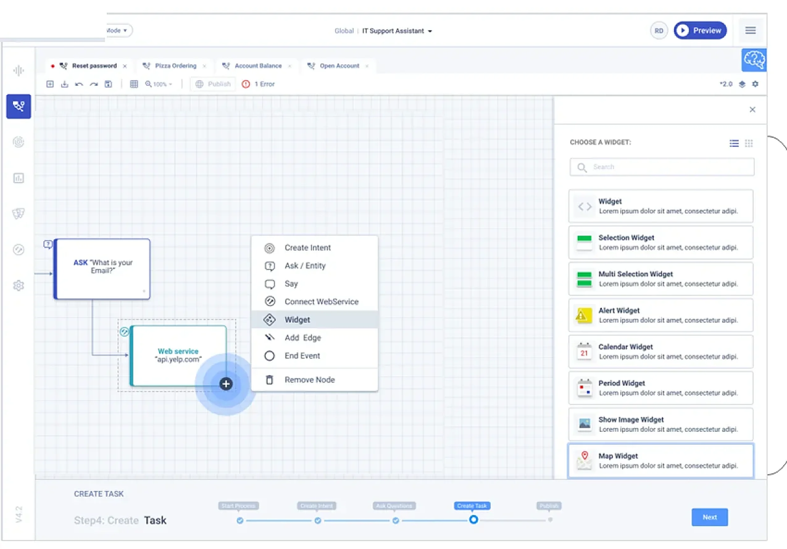
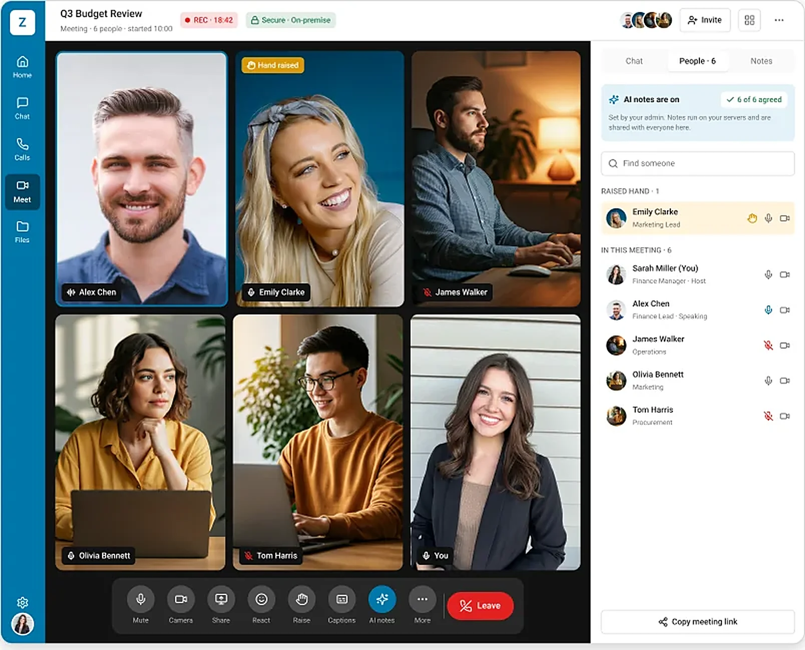
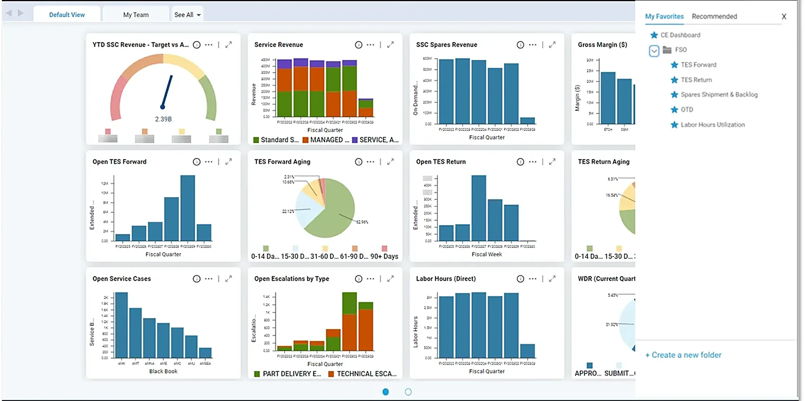
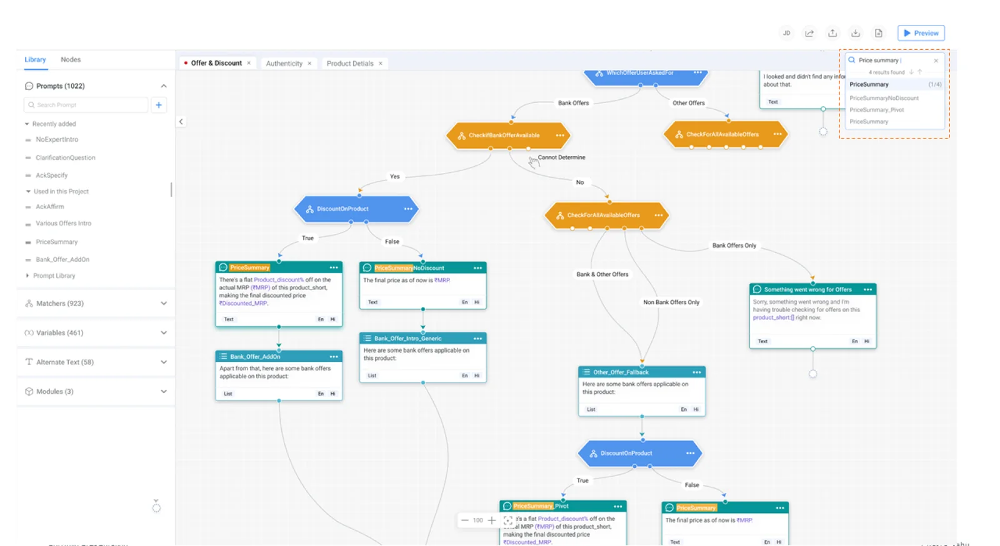
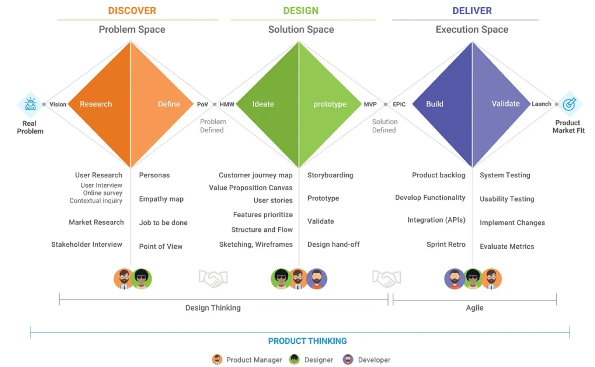

Open to principal, staff and lead roles
Product Design Leader | AI-Native Product Designer | Enterprise AI and SaaS Platforms
I turn small requests into product strategy.
15+ years of experience, including 10+ years in enterprise product design and 5+ years leading design teams. I design AI builder platforms, conversational AI, field service systems, BI tools and enterprise communication products.
Experience at Flipkart, Applied Materials, Amelia, Ericsson and Oracle.
Selected work
Case studies
Each case study shows the problem, the decisions I took and why, and the outcome.

Enterprise AI
AI builder platform
A low-code AI IDE with an easy visual editor and pre-built widgets to manage the end-to-end conversational process.

Semiconductor field service
Field service management
Automate all field service activities in semiconductor fabs: schedule preventive maintenance automatically, speed up service work and improve first-time-fix rates.

Like Outlook, on your own servers
Enterprise email suite
Rebuilding enterprise email trust at scale: one complete, secure productivity suite for pro users who need flexibility and beginners who need simple actions.

Like Teams and Slack, self-initiated concept
Team collaboration suite
A self-initiated concept for secure chat, meetings and AI inside an on-premise email suite.

Data and BI
Self-service BI platform
A role-based self-service BI platform with actionable insights, to view KPIs and metrics and take action faster.

Conversational AI
Conversation flow builder
A one-stop solution to design, prototype, test, analyse and deploy voice conversational experiences, with easy integration with programming logic and data science.
About me
Who I am
I believe planning, organising and optimising are the three core pillars of design, along with human empathy. I turn small requests into product strategy, and I build simple yet scalable products.
Small requests, big direction
I look for the real need behind a request and turn it into product strategy.
Simple and scalable
I make complex tools simple, and build them so they can grow.
Whole ecosystem
I design across web, mobile, admin and AI, so it all works as one product.
Leading teams
I have led teams of 6 and 12 designers, and worked with vendor teams I did not manage.
Core competencies
- Product strategy
- AI product design
- Enterprise UX
- Research and evidence
- Design systems
- AI-native design to code
- Leadership and influence
How I think
What I was asked, and what it became
"Make the bot tools easier"A platform where business users build AI assistants without developers
"Give engineers a mobile app"A tablet system for semiconductor fabs with no phones and no internet
"Add a convert-to-task button"A full Tasks area, inside a plan to win back expert users
"Add a Teams button"A concept for the second half of the suite: chat, meetings and AI
"Make the canvas better"A flow builder that removes fear and repetition for experts
How I work
Find the real problem, then design the system around it
Find the real need
I try to understand the real problem behind a request, with evidence, before I start in Figma.
Design the whole system
The hardest problems are between the screens, so I design the connections.
Keep the team consistent
Design systems, guidelines and reviews help many people build one product.
Work with AI
AI helps me with research, screens and code, but the decisions are mine.

Experience
Where I have worked
- 2025 to now
- Principal Product DesignerGlobal enterprise email company
- Sole designer across web, mobile and admin.
- 2022 to 2025
- Staff Product DesignerApplied Materials
- AI, ML and BI tools. Led and mentored 6 designers.
- 2021 to 2022
- Product Designer IIIFlipkart
- Conversational AI and voice search.
- 2020 to 2021
- Senior UX DesignerAmelia (IPsoft)
- Design lead for the AI builder.
- 2017 to 2020
- Senior UX DesignerApplied Materials
- Field service, pricing and cost tools.
- 2013 to 2017
- UX Design LeadEricsson
- Led 12 designers on global platforms.